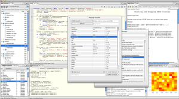

R-Cloud Workbench
Remote access to R/Bioconductor on EBI's 64-bit Linux Cluster
Start the workbench by downloading the package for your operating system (Macintosh or Windows), or via
Java Web Start, and you will get access to an instance of R running on one of EBI's powerful machines.
You can install additional packages, upload your own data, work with graphics and collaborate with
colleagues, all as if you are running R locally, but unlimited by your machine's memory, processor or data
storage capacity.
- Most up-to-date R version built for multicore CPUs
- Access to all Bioconductor packages
- Access to our computing infrastructure
- Fast access to data stored in EBI's repositories (e.g., public microarray data in ArrayExpress)
Workbench Downloads
|
 |
About the Project
The R-Cloud Workbench is an outgrowth of the BBSRC (UK) funded (grant number
BB/E001653/1) project called BioC-WebGUIs, with internal project name BIOCEP, whose main achievement has been
the construction of an R virtualization framework, and the development of a scalable, distributed framework for
exposure of R/Bioconductor packages to Java applications; also, a general resource pooling framework suitable
for dispatching compute-intensive tasks to the server farm infrastructure at the EBI.
Project Authors
- Project Leader: Misha Kapushesky
- Lead Engineer: Andrew Tikhonov
This project uses the Biocep-R open-source platform developed by Karim Chine.
R-Cloud Workbench
|